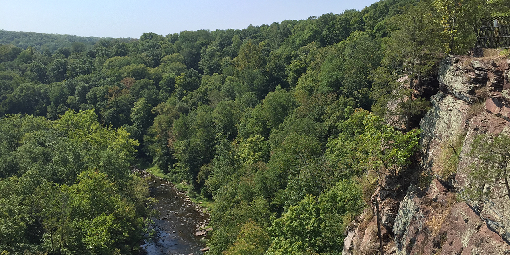
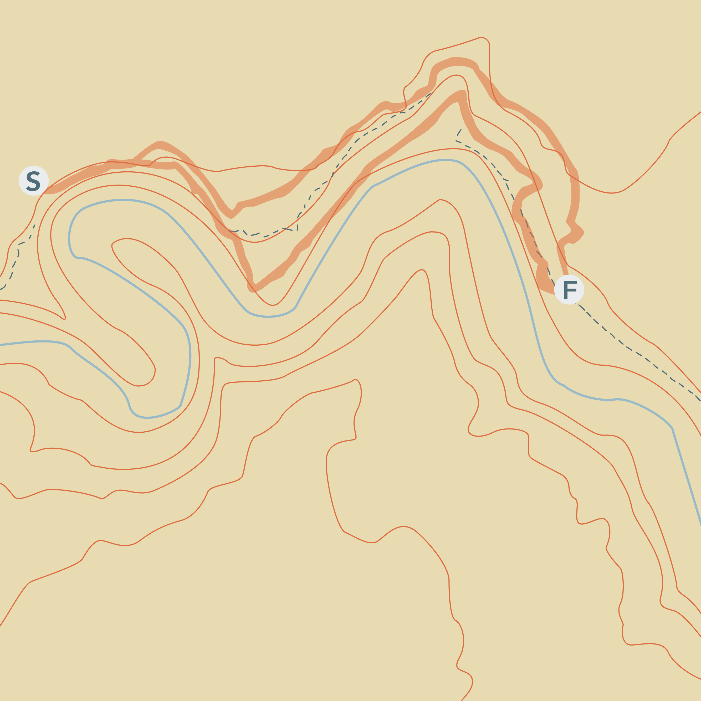
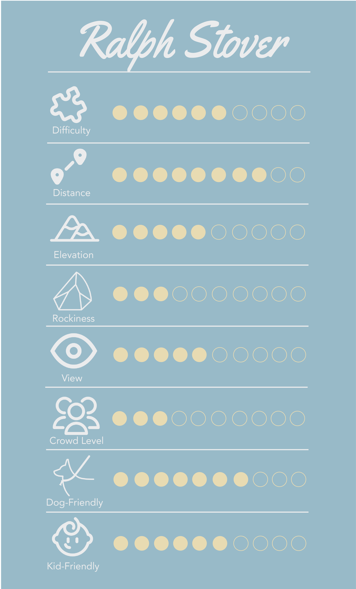
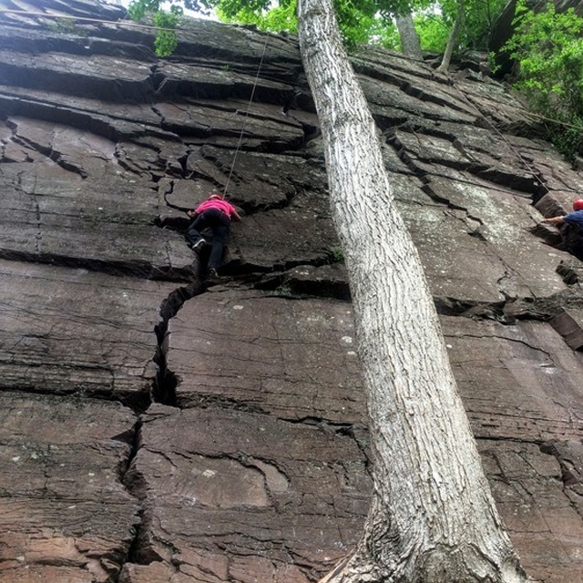
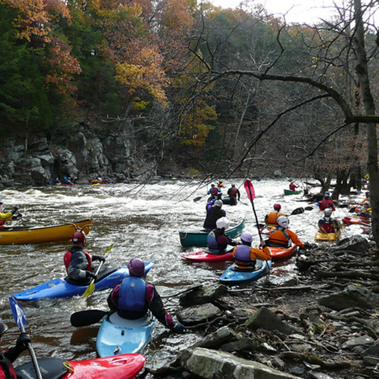
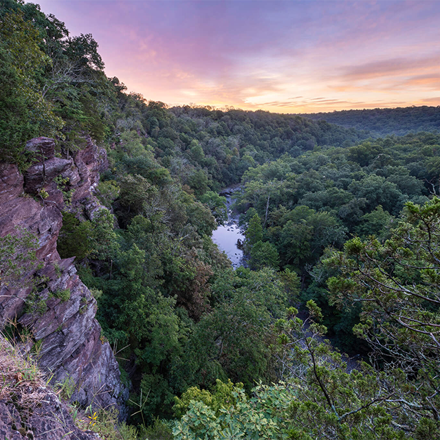

If you're an experienced climber, bring your equipment and try scaling the cliffs!



SHUT THE DOOR.
GO OUTSIDE.
One of Buck’s County’s treasures, Ralph Stover State Park offers a fantastic walking trail for the intermediate hiker. The trail is longer than others at 2.8 miles, but it offers several areas of flat land for a nice breathing break along the 1.5 hour long trek. The total accession on this trail is about 300 feet, which makes it perfect for hikers who are looking for a moderate hike. The High Rocks section of the park features an outstanding view of a horseshoe bend in Tohickon Creek Gorge and the surrounding forest. This trek offers several excellent photo opportunities, and there is little climbing needed on this trail along the cliff sides. Rock climbing on the sides of the cliff is popular, but only recommended if you’re a professional! Additional equipment outside of a good pair of hiking shoes is not needed on this trail.
Ralph Stover State Park is two miles north of Point Pleasant on State Park Road and Stump Road, in eastern Bucks County. The main address is 5987 State Park Rd, Plumstead Township, PA, 18947, USA. If traveling from Allentown, expect a 50 minute car ride southeast towards Philadelphia. For our Philly hikers, you will have to travel an hour and 15 minutes northwest. Once you reach the parking lot, cross the red bridge and continue on the path. Eventually, you will find the safety railing on the side of the cliff. From here, you can follow the white trailmarks.


Ralph Stover is a popular place for whitewater rafting and other family activities.

The park is named after Ralph Stover, a PA politician who donated his land to start the park.